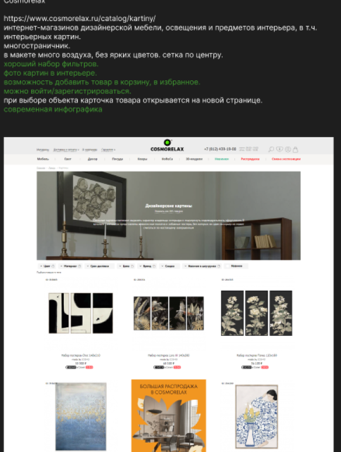
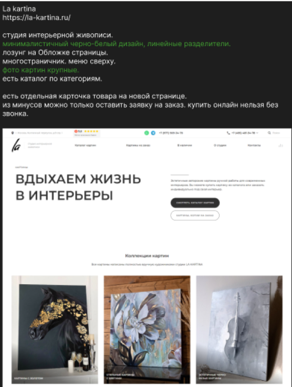
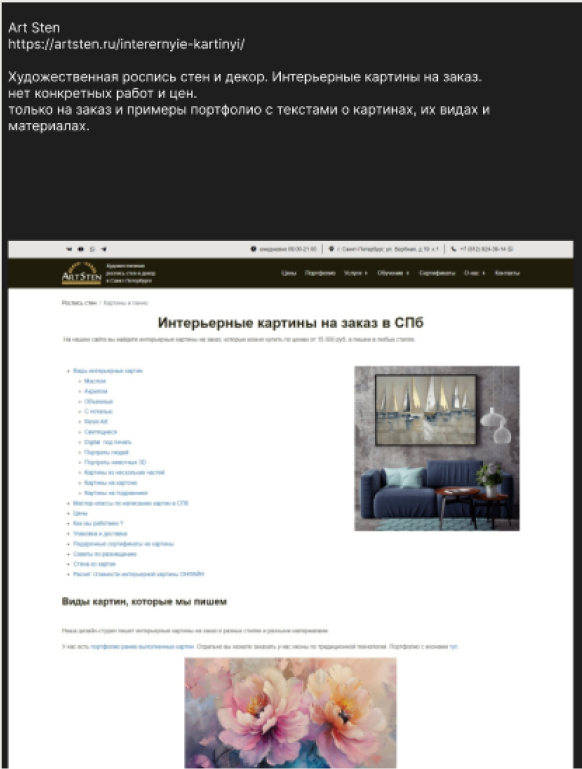
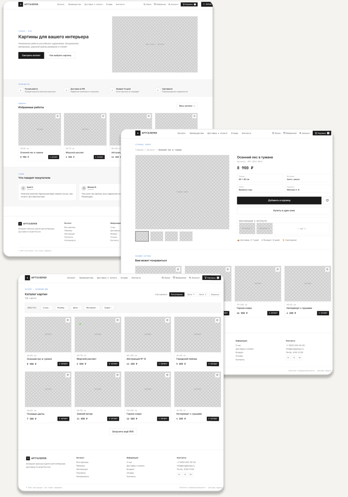
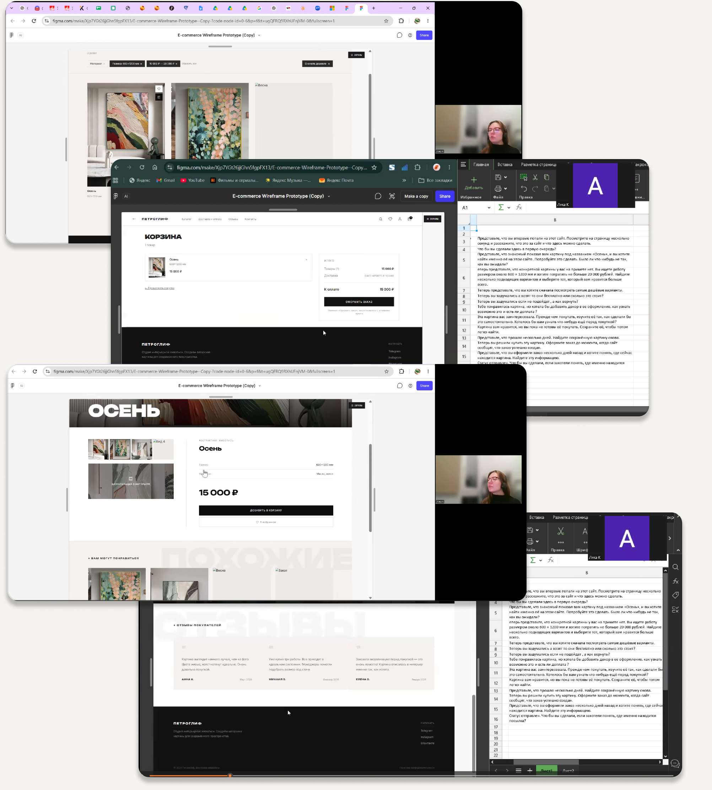
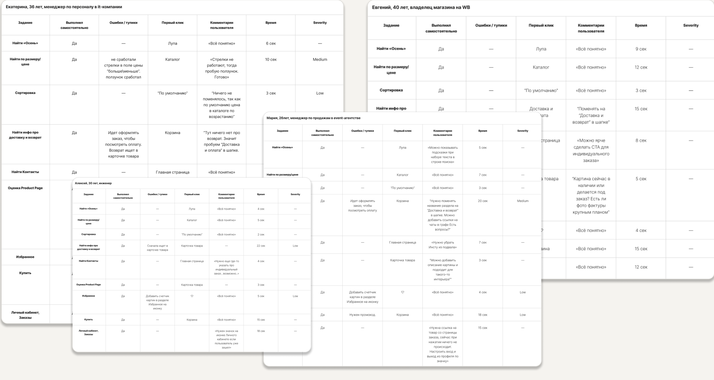

ЗАДАЧА
Спроектировать понятный путь к покупке
Создать интернет-магазин, который помогает выбрать картину под интерьер, снижает сомнения перед покупкой и делает условия заказа прозрачными.

Создать интернет-магазин, который помогает выбрать картину под интерьер, снижает сомнения перед покупкой и делает условия заказа прозрачными.
Проводила исследования и тестирование, формировала пользовательские сценарии, проектировала структуру и полностью собирала интерфейс в Figma.
Особое внимание — визуальному сравнению работ, характеристикам, фильтрам, визуализации в интерьере, доставке и возврату.
Процесс строился итеративно: сначала я собрала контекст рынка и пользовательские ожидания, затем сформировала сценарии и архитектуру, проверила прототип на пользователях и только после этого финализировала визуальную систему.
Я изучила три магазина и сравнила подачу каталога, карточек товара, доверительных сигналов и условий покупки.
Задача этапа — понять, какие паттерны помогают принять решение, а где возникает перегруз или недоверие.



Цена, размер и визуал работы должны считываться без открытия каждой карточки.
Фото, условия доставки и возврата важны не меньше эстетики.
Интерфейс должен поддерживать произведение, а не конкурировать с ним.
В референсах я искала не конкретные UI-паттерны для копирования, а атмосферу: крупный масштаб, редакционную типографику, чистый фон и ощущение цифровой выставки.

Персоны показали разные скорости принятия решения: быстрый покупатель хочет минимум шагов, визуальный исследователь сравнивает и возвращается, осторожный пользователь ищет гарантии и подробности.
Нужны быстрый каталог, понятные фильтры, видимая цена и короткий checkout. Точки отказа: обязательная регистрация и неясная доставка.
Сравнивает варианты, ожидает качественные фото, zoom, похожие товары и визуализацию картины в интерьере.
Скрупулёзно изучает отзывы, возврат, доставку и информацию о компании. Может откладывать решение и возвращаться.

Journey Map помогла увидеть путь целиком — от первого знакомства с магазином до оплаты и отслеживания заказа. Основной риск концентрируется в точках выбора, доверия и прозрачности стоимости.


Тестирование проходило удалённо в Zoom по заранее подготовленному сценарию с четырьмя пользователями. Все участники прошли сценарий, а замечания были проанализированы и приоритизированы для следующей итерации.



До финального направления я рассмотрела несколько композиций и визуальных языков. В итоговой версии сохранила сильную идентичность, выставочный масштаб и более спокойную коммерческую логику.

Интерфейс сочетает галерейную подачу с понятной e-commerce логикой: пользователь может быстро ориентироваться в каталоге, сравнивать работы, изучать детали и уверенно двигаться к покупке.
Фильтры, характеристики, визуализация и прозрачные условия поддерживают решение о покупке.
Крупные изображения, спокойная палитра и редакционная типографика создают ощущение цифровой галереи.
Единые компоненты и повторяемые паттерны позволяют развивать каталог, аккаунт и checkout.


Проект прошёл полный UX/UI-цикл: анализ рынка, пользовательские модели, путь и сценарии, прототипирование, удалённое модерируемое тестирование и финальную визуальную систему. Результат — интерфейс, в котором эмоциональная ценность искусства поддержана понятной логикой покупки.